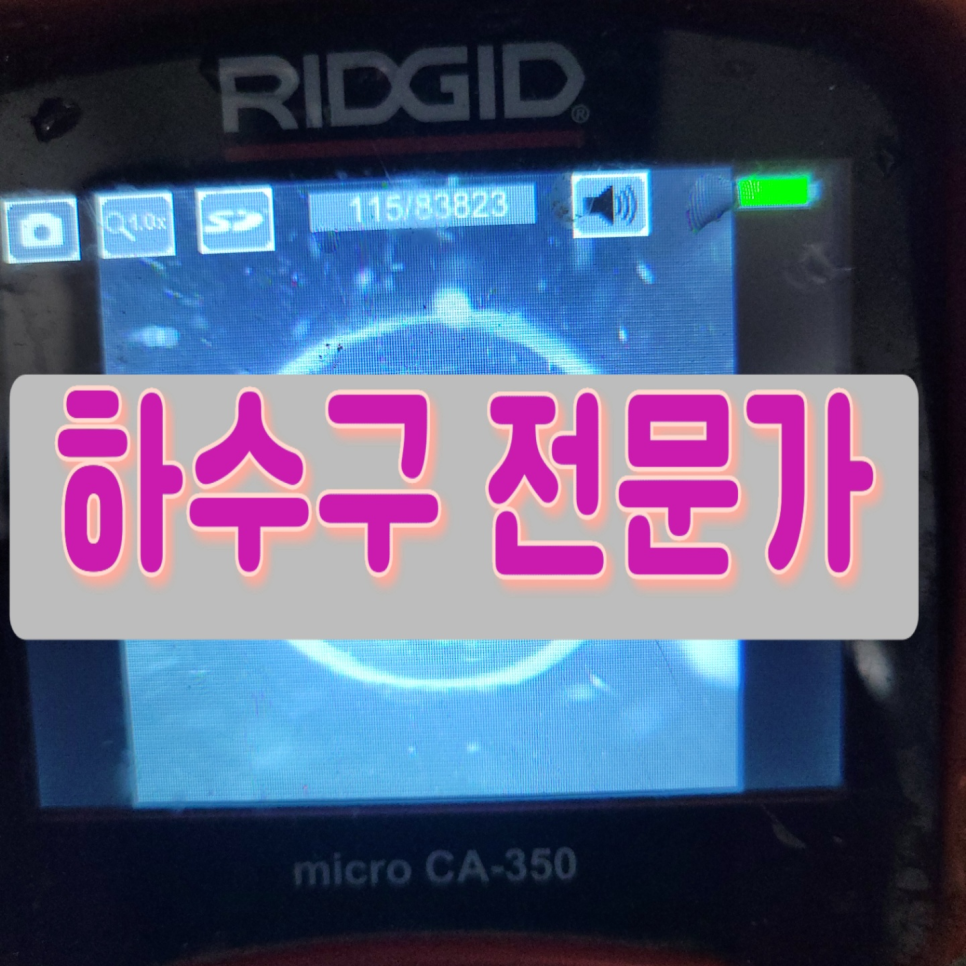
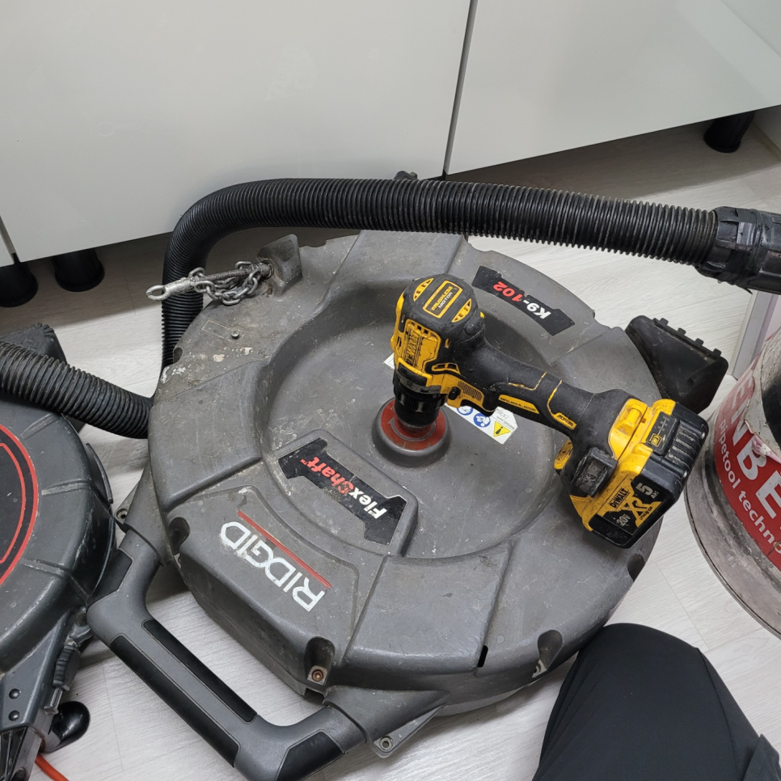
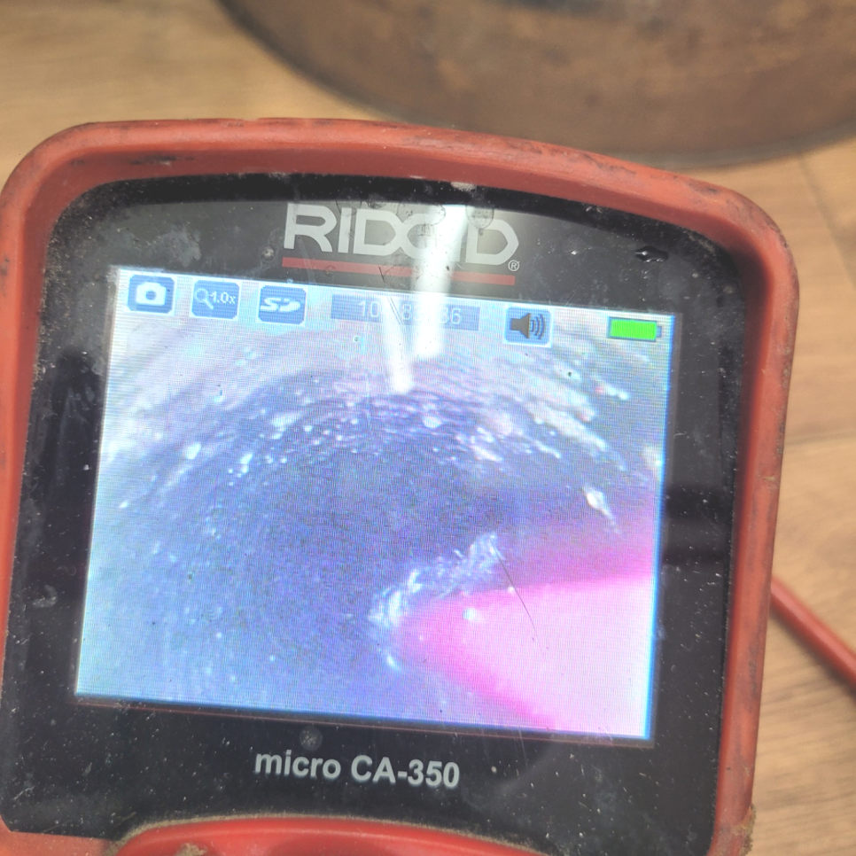
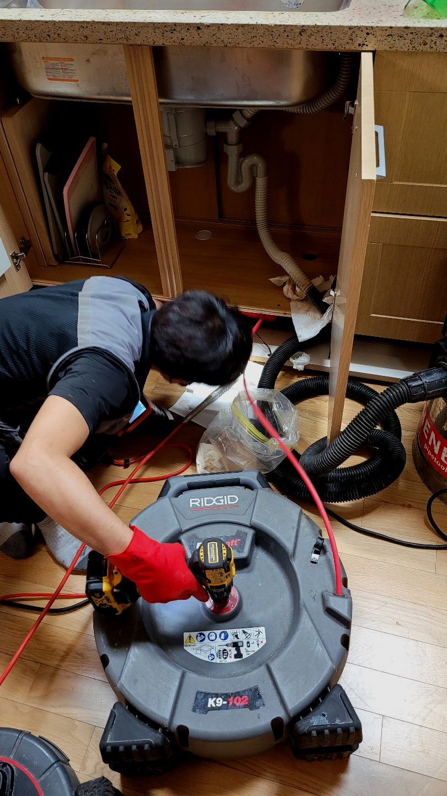
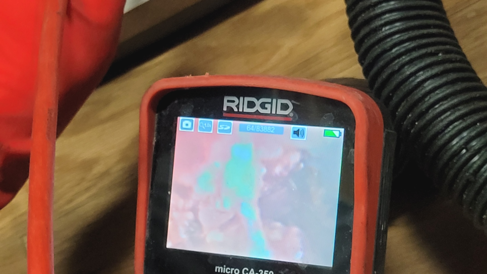
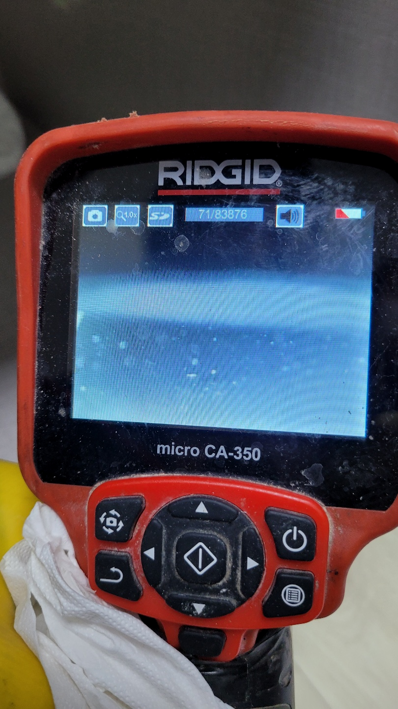
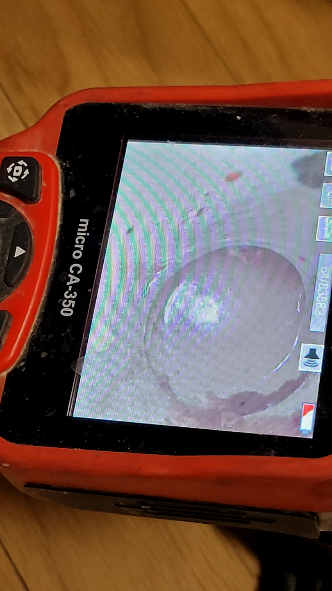

🏠 일산동구 마두동 싱크대배수관막힘 백석동 배수구역류 뚫는곳 설비
용인 싱크대막힘 전문 시공 후기

📋 작업 개요
- 위치: 용인
- 서비스 유형: 싱크대막힘, 변기막힘, 하수구막힘, 배관막힘, 역류해결, 뚫는업체, 배관청소, 고압세척
- 작업 일시: 2024. 1. 9. 20:35
- 업체명: 하수구수사대 (010-5615-2118)
🔍 문제 상황
어서오세요
설비전문업체 "하수구수사대"를 찾아주셔서 고맙습니다^^
주변을 둘러보면 구매가능한 화학약품들로 막힌퇴수구 수리가안되면 무슨해결책으로 퇴수구배관을다시 원상태로돌릴수있을까요. 하수도로물이 내려가지않는다면 물사용에 문제가생기며 심각한상황에는 막막하실텐데요
하수도 문제의 원인은 다양하며, 클리너나 세제를 사용하여 해결하기 어려운 경우가 있습니다. 이때 플렉스 샤프트기를 사용하면 어떠한 상황에서도 효과적으로 하수도을 청소할 수 있습니다. 하수관 막힘은 생활에 큰 불편함을 초래하므로, 빠른 대처가 필요합니다.

🔎 원인 분석
💡 전문가 진단: 일산동구 마두동 싱크대배수관막힘 백석동 배수구역류 뚫는곳 설비
일산동구 마두동 싱크대배수관막힘 백석동 배수구역류 뚫는곳 설비
수도권 모든 지역에서 경력 있는 하수관기사님들이 대기하고 있기 때문에 계신 지역이 어디든지 방문 드릴 수 있으며 아무리 심각한 상황이라고 할지라도 빠르게 대처해 드리기 위해서 1시간 이내 도착을 약속하고 있습니다.
믿고 부른 하수도업체가 제대로 뚫었다면서 철수했는데 얼마 지나지 않아서 똑같은 증상이 재발했다는 경우도 어렵지 않게 봅니다. 양심적인 업체였다면 이럴 때 당연히 다시 가서 뚫어주어야만 하는 것입니다.
외부 이물질이 원인인 경우 눈으로 보이는 배관이 막힌 것인지 아니면 벽 안쪽의 문제인지를 정확하게 파악을 해서 해결을 해야 합니다. 배수 막힘은 전문 업체를 통해서 해결을 하시는 것이 필요하며 배수막힘이 발생을 하면 망설이지 마시고 전문 업체 쪽으로 연락해 주시기를 바랍니다.
단순히 스프링 기계 또는 석션기를 활용한 응급조치만 하였기에 별다른 문제점을 발견 못했다고 하셨어요. 진단 결과 근본적인 문제가 되는 물질들을 말끔히 제거해 드려야겠다고 생각하였는데요. 고압세척 등을 통해 배출구 내부에 있는 이물질 덩어리들을 제거하였습니다.

🔧 작업 과정
기름 덩어리들이 배수의 흐름을 막고 있었기에 팽창되어 있던 하수도배관에 물이 흐르게 되자 시원한 소리가 나며 사태가 해결되었습니다. 이를 보고 계시던 고객님도 흡족해하셨는데 혹시라도 이물질이 남아있을지도 모르기에 내시경 전문기계로 꼼꼼하게 확인하면서 흡입기를 통해 제거하는 과정을 여러 번 반복하여 드렸습니다.
배출구전문장비로 하수구안까지 볼수있기에 일반적으로 보지못했던데까지 빈틈없이확인 할수있습니다.이러한엄청난 장점때문에 실패할확률이 많이낮다라고 말할수있어요
배수관 다른설비회사에 연락하고 작업하셨다가 제대로안고쳐졌던 느낌을받으셨다면 의뢰해주시면 전력을다해서 처리해드리겠습니다.
아무래도 고객분의 입장에선 한 번에 문제를 해결하길 바라실 텐데 또 비슷한 말썽이 발생하니 짜증이 나거나 화가 나실 수도 있을 것입니다. 게다가 하수도나 배관에 문제가 생기게 되면 당장 물을 사용할 수 없으므로 그게 화장실이든 부엌이든 일상생활에 불편함을 겪을 수밖에 없습니다.
저희는 해결 작업을 하고 나면 대충 하는 것이 아닌, 고객의 요청에 따라 하수내시경 카메라를 사용하여 세밀한 조사를 진행합니다. 만약 오수관 작업을 뺀 샤프트 시공이 필요하다면, 이를 거쳐 문제를 해결해 드립니다. 또한, 하수 고압세척 외에도 배관 내부의 상태를 정확히 파악하기 위해 관로 탐지기를 사용하기도 합니다.
대부분 하수관배관에서 나오는 이물질들은 자주 사용하는 이물질들이 많은데 빵 부스러기나 커피 찌꺼기들은 아무리 탈탈 털어서 제거를 한다고 해도 그릇이나 커피 머신에 붙은 것들이 잘 떨어지지 않아 하수구로 유입되는 경우가 많습니다.
한창 바쁠 시간대에 이런 일이 발생하면 당혹스러움은 두 배, 세 배로 커질 텐데요. 응급처치를 위해 구비해 둔 약품도 전혀 소용이 없었다는 이번 현장을 살펴보며 왜 하수 막힘은 예고 없이 불쑥 찾아와 편안한 일상에 차질을 주는지 알아보겠습니다.
저희는 이 부분도 놓치지 않고 하수관청소를 함으로서 향후 추가로 이물질을 유입하지 않는 한, 막힘 없이 사용하실 수 있도록 도와드렸습니다. 여러분동 비슷한 하수관막힘 불편을 겪고 계시다면 지금 전문가에게 문의하세요!


✅ 작업 완료
퇴수구 관련된 곳이라면 무엇이든 도맡아 하고 있으니 늦어지기 전에 막힌 배수관을 뚫어내고 싶으신 경우 밤낮없이 대기 중이니 통화 걸어 주시면 친절하게 맞이해 안내해 드립니다.
#하수구막힘 #하수구뚫음 #하수구역류 #씽크대막힘 #싱크대역류 #오수관막힘 #하수구청소 #욕실하수구막힘 #변기막힘 #하수구뚫는비용 #싱크대수리 #화장실막힘




⚠️ 주방 싱크대 배관 막힘 예방 수칙
- ✅ 기름기가 묻은 식기나 프라이팬은 설거지 전 키친타올로 반드시 기름때를 닦아내세요.
- ✅ 주기적으로 싱크대 개수대에 뜨거운 물을 가득 받아 한 번에 내려 배관 내부 기름을 씻어내세요.
- ✅ 배수구 거름망을 미세한 필터로 사용하시고 음식물 찌꺼기가 틈으로 새어 들지 않게 관리하세요.
- ✅ 베이킹소다와 식초를 뜨거운 물과 함께 일주일에 한 번씩 부어주면 배관 살균과 막힘 예방에 좋습니다.
💡 핵심 정리
- 확실한 장비 작업(내시경 점검 및 샤프트 스케일링)으로 원인을 뿌리 뽑습니다.
- 작업 후 1년 이내에 동일한 부위 재발 시 100% 무상 A/S 서비스를 보장합니다.
- 서울 · 경기 · 인천 전 지역에 24시간 언제든 긴급 출동할 수 있도록 항시 대기 중입니다.
❓ 자주 묻는 질문 (FAQ)
🚨 용인 싱크대막힘 문제로 고민이신가요?
정확한 원인 진단과 확실한 시공으로 재발 없는 해결을 약속드립니다.
24시간 긴급 출동 | 서울 · 경기 · 인천 전지역 | 1년 내 재발 시 무상 A/S